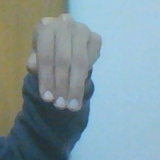
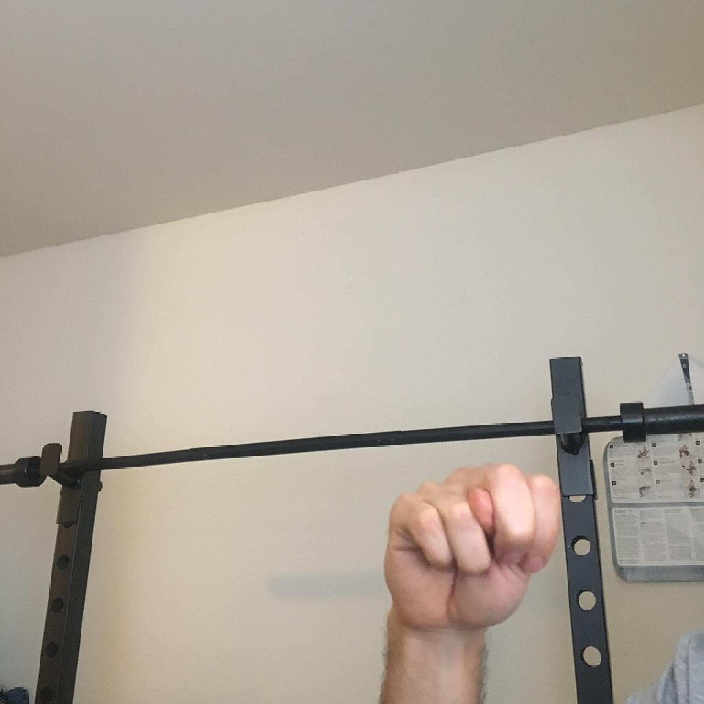
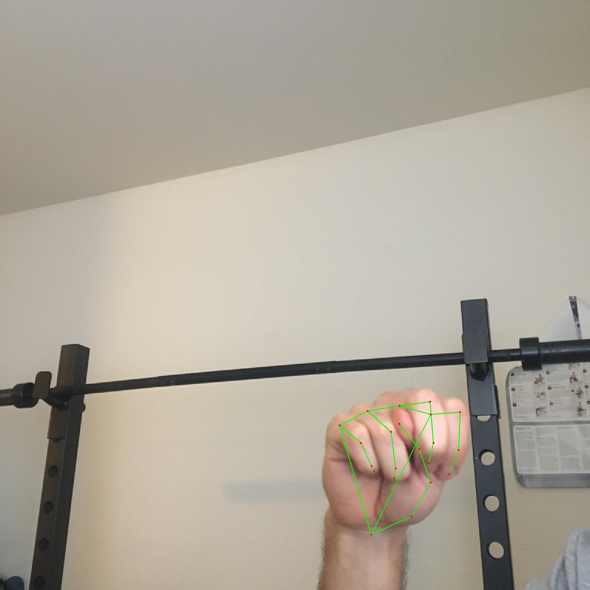
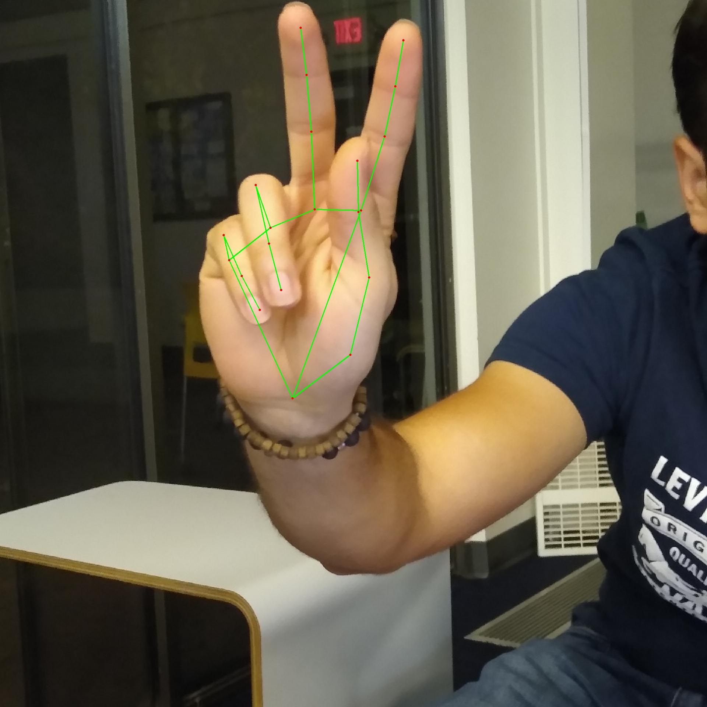
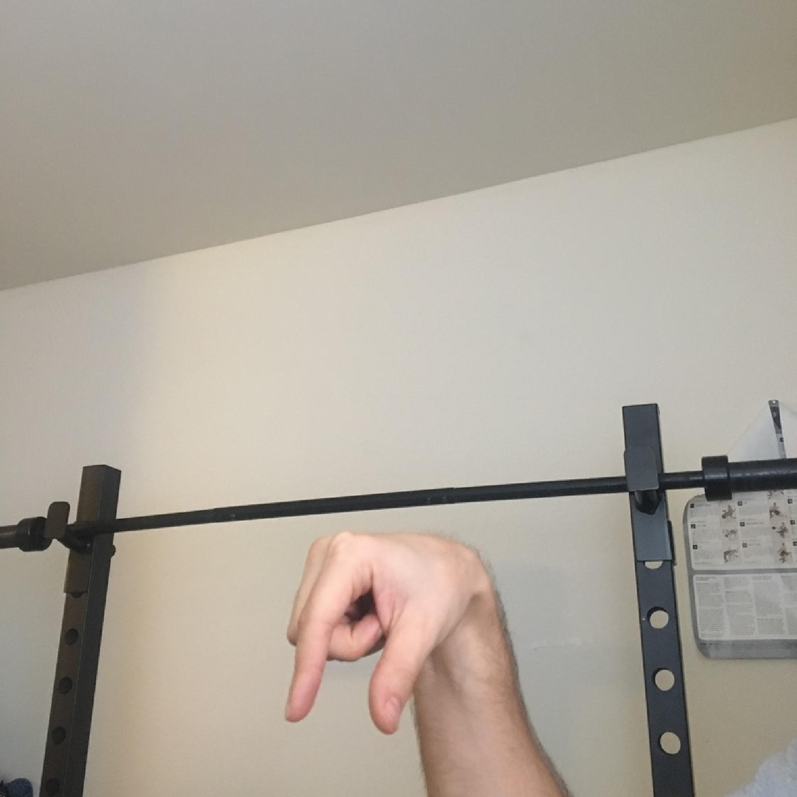
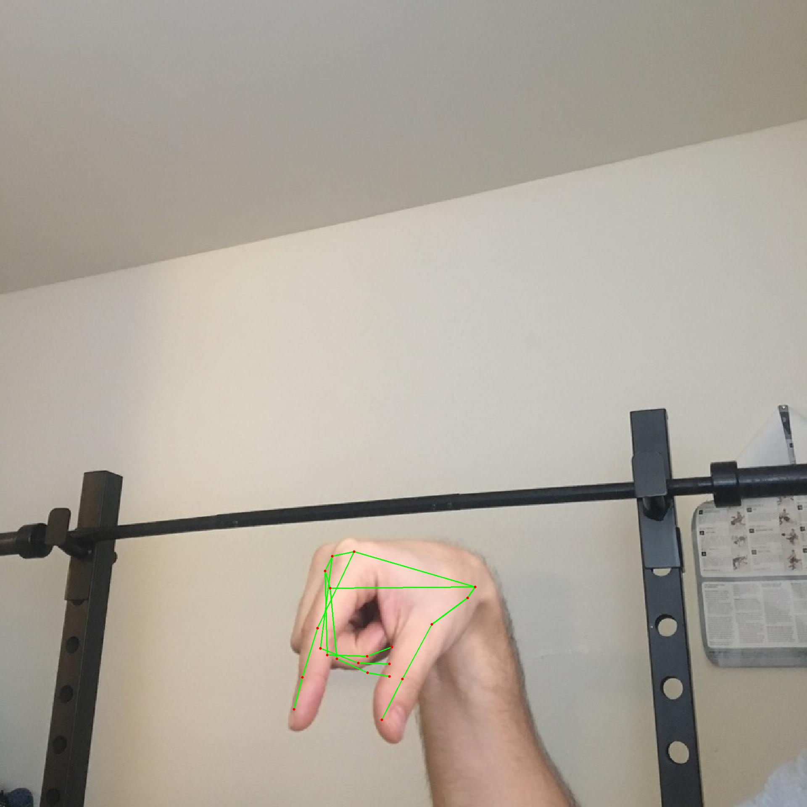

Later data correction: 2,252 additional M rows were excluded after image review. This report retains its historical metrics and row numbers. See output/archive4-M-pose-review/review.html for the correction audit.
Historical snapshot: after this report, the user identified the image behind original row 110182 as a wrong M sign. That matching row was removed from the main CSV. Row numbers and metrics below refer to the pre-correction dataset. The original dataset and split manifest are preserved in archive/data-corrections/remove-wrong-M-20261021T150522127835Z.
ASignX data recheck
159,987 rows, 24 classes. Dataset hash and original partitions unchanged. Numerical and canonical split checks passed. No labels or rows changed.
Additional numerical similarity check
Up to 100 rows per class per evaluation partition, sampled with seed 42, compared with every original training row. Similar geometry alone is not proof of image duplication or label error.
| Partition | Sampled rows | Distance <= 0.015 | Different label among close matches |
|---|
| validation | 2400 | 0 | 0 |
| test | 2400 | 0 | 0 |
Original images and detected geometry
These are source-image examples, not a list of confirmed errors. Each card shows the current model prediction and original partition. Matching a stored label does not independently verify that label.
The same coordinates can be reproduced even when the detector places a landmark incorrectly. Numerical consistency does not establish anatomical or linguistic correctness. The recovered M image is 200 x 200 pixels with overlapping fingers. The other examples have different scales and viewpoints. These examples need visual review; their labels have not been independently verified.
CSV row 110182: stored label M
Prediction differs from stored label | Model: N (96.16%) | Partition: test


Geometry matched; sign label not independently verified. Prediction agreement is not independent label verification.
ASL_Alphabet_Dataset/asl_alphabet_train/M/M (100).jpg
CSV row 113222: stored label N
Prediction matches stored label | Model: N (95.72%) | Partition: train


Geometry matched; sign label not independently verified. Prediction agreement is not independent label verification.
ASL_Alphabet_Dataset/asl_alphabet_train/N/1.jpg
CSV row 100747: stored label K
Prediction matches stored label | Model: K (97.68%) | Partition: test

Geometry matched; sign label not independently verified. Prediction agreement is not independent label verification.
ASL_Alphabet_Dataset/asl_alphabet_train/K/1.jpg
CSV row 123354: stored label Q
Prediction matches stored label | Model: Q (93.04%) | Partition: test


Geometry matched; sign label not independently verified. Prediction agreement is not independent label verification.
ASL_Alphabet_Dataset/asl_alphabet_train/Q/1.jpg
Evidence
Complete recheck | Nearest-training diagnostic rows